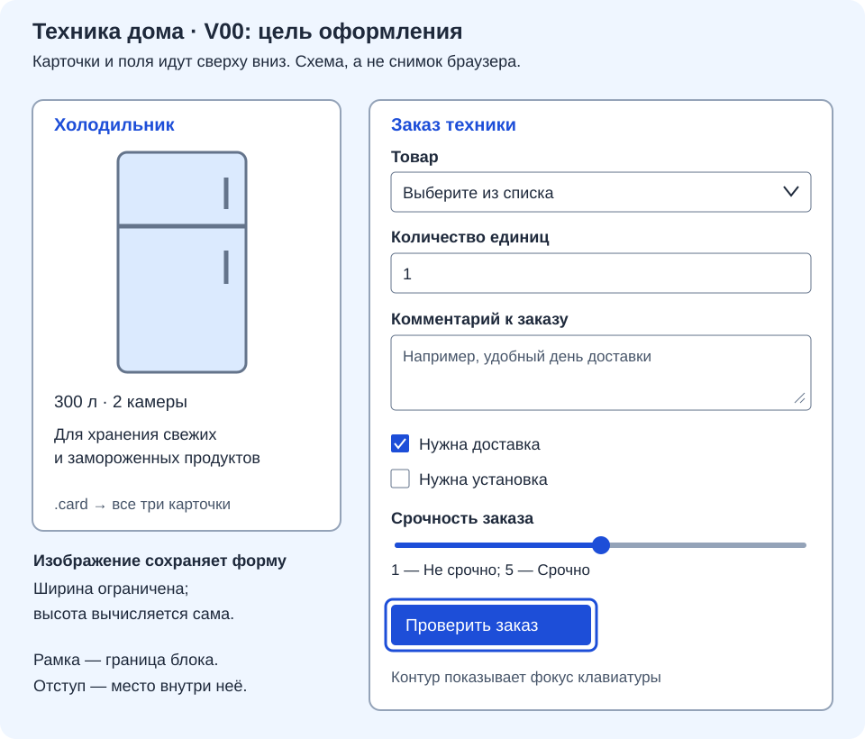

Оформление страниц, карточек каталога и формы
Индивидуальные задания пары 16
- Вариант 01
- Вариант 02
- Вариант 03
- Вариант 04
- Вариант 05
- Вариант 06
- Вариант 07
- Вариант 08
- Вариант 09
- Вариант 10
- Вариант 11
- Вариант 12
- Вариант 13
- Вариант 14
- Вариант 15
- Вариант 16
- Вариант 17
- Вариант 18
- Вариант 19
- Вариант 20
- Вариант 21
- Вариант 22
- Вариант 23
- Вариант 24
- Вариант 25
- Вариант 26
- Вариант 27
- Вариант 28
- Вариант 29
- Вариант 30
- Вариант 31
- Вариант 32
- Вариант 33
- Вариант 34
- Вариант 35
- Вариант 36
- Вариант 37
- Вариант 38
- Вариант 39
Продолжаем тот же проект после первой практики. Нужно сделать три страницы похожими по оформлению, карточки — аккуратными, форму — удобной. Карточки и поля пока остаются сверху вниз.
Текущий набор индивидуальных заданий — используйте свои тексты, изображения и цвета. Полный пример 00 этой пары показывает результат картинками и хранит постоянные данные и стили. Индивидуальные листы используют тот же способ оформления со своими текстами и палитрой.
| Шаг | Что меняем | Что должно быть видно |
|---|---|---|
| 1 | Цвета и карточки | Общее оформление трёх страниц |
| 2 | Форма | Подписи над полями, два маленьких флажка |
| 3 | Фокус | При Tab видно выбранный элемент |
| 4 | Проверка и сохранение | Страницы работают, задание третьей пары доступно без сети |
Перед работой откройте главную, каталог и форму. Во всех файлах подключён общий style.css, у main есть класс page, у трёх article — card. В каждом меню две ссылки на другие страницы, без ссылки на саму себя.
Нулевой пример преподавателя
Открыть задание 00 с тремя изображениями результата, данными и таблицей стилей. Файл variant.md принадлежит этой паре и сохраняется при смене студенческих вариантов; изображения статьи и примера находятся в assets/ пары либо в общем assets/ курса.
Не заменяйте файлы целиком. Найдите нужное правило CSS и дополните его; после каждого шага сохраните и обновите браузер.
1. Цвета, карточки и картинки
В body сохраните фон и основной текст своего варианта. Для примера 00:
background-color: #EFF6FF;
color: #1E293B;
Это две строки внутри существующего body { ... }. Для заголовков и ссылок примера:
h1, h2 {
color: #1D4ED8;
}
a {
color: #1D4ED8;
}
У себя используйте свой акцент. Подчёркивание обычных ссылок и оформление меню сохраните.
В .card добавьте белую поверхность и скругление, оставив рамку и отступы первой практики:
background-color: #FFFFFF;
border-radius: 0.5rem;
В примере 00 заметные рамки и цветные абзацы заданы его таблицей стилей. Для демонстрации преподаватель берёт значения из этой таблицы; она уточняет базовые образцы статьи.
Для изображений проверьте общую защиту от выхода за край:
img {
max-width: 100%;
height: auto;
}
.card img {
display: block;
width: 100%;
max-width: 18rem;
}
Пробел в .card img означает «картинки внутри карточек». height: auto сохраняет пропорции; предел ширины не даёт картинкам каталога стать слишком большими.
Посмотрите результат: три отдельные белые карточки, читаемые заголовки, картинки не растянуты. Главная, каталог и форма используют общие цвета.
2. Форма: сначала классы, затем оформление
В form.html добавьте класс существующей форме, сохранив остальные атрибуты:
<form class="request-form" method="get">
| В существующем HTML | Что добавить |
|---|---|
| Абзацы со списком, количеством, комментарием и шкалой | class="form-field" — всего четыре абзаца |
| Абзацы двух флажков | Оставить без этого класса |
Пример начала абзаца количества:
<p class="form-field">
<label for="quantity">Количество единиц</label>
Поле под подписью, его id, name, ограничения ввода и закрывающий </p> оставьте прежними. Если класс уже есть, допишите новый через пробел.
Теперь оформите форму в style.css:
.request-form {
background-color: #FFFFFF;
border: 1px solid #94A3B8;
border-radius: 0.5rem;
padding: 1rem;
}
.form-field {
margin: 0 0 1rem;
}
.form-field > label {
display: block;
margin-bottom: 0.35rem;
font-weight: bold;
}
.request-form input,
.request-form select,
.request-form textarea,
.request-form button {
font: inherit;
}
> label выбирает подпись непосредственно внутри form-field: она окажется над полем. Подписи флажков остаются рядом с ними. font: inherit даёт полям тот же шрифт, что у формы.
Ширину задайте только нужным полям:
.request-form select,
.request-form input[type="number"],
.request-form textarea {
width: 100%;
padding: 0.6rem;
border: 1px solid #64748B;
border-radius: 0.35rem;
}
.request-form input[type="range"] {
width: 100%;
}
.request-form textarea {
resize: vertical;
}
Не пишите общее input { width: 100%; }: оно растянет флажки. Благодаря border-box из первой практики широкие поля помещаются вместе с рамками и отступами.
Для кнопки примера 00:
.request-form button {
padding: 0.65rem 1rem;
border: 2px solid #1D4ED8;
border-radius: 0.35rem;
background-color: #1D4ED8;
color: #FFFFFF;
}
В своём проекте возьмите акцент варианта и читаемый на нём цвет текста.

Посмотрите результат: четыре подписи над полями, два флажка маленькие и с подписями рядом, кнопка заметна. Все шесть прежних элементов формы сохранились.
3. Сделайте видимым выбор с клавиатуры
В CSS добавьте:
a:focus-visible,
input:focus-visible,
select:focus-visible,
textarea:focus-visible,
button:focus-visible {
outline: 3px solid #C2410C;
outline-offset: 3px;
}
Нажмите Tab несколько раз. Контур должен переходить между ссылками, полями и кнопкой. Enter открывает выбранную ссылку, пробел переключает флажок. Контур показывается при работе клавиатурой; не нужно добиваться его постоянного отображения.
4. Проверьте результат и подготовьтесь к третьей паре
Сохраните проект. Пройдите три короткие проверки:
| Что сделать | Что увидеть |
|---|---|
| Открыть главную → каталог → форму, сузить окно | Две ссылки меню работают; три карточки и картинки помещаются; оформление общее |
Нажать Tab, затем подписи флажков |
Контур заметен, каждый флажок переключается отдельно |
| Отправить форму без выбора товара, затем заполнить её корректно | Сначала браузер просит выбор; затем в адресе появляются параметры GET |
GET здесь только показывает учебные параметры, приложение не сохраняет заявку. Для повторной проверки начальных значений перейдите на главную и вернитесь в форму.
Если что-то нарушилось, найдите причину по таблице:
| Проблема | Где искать |
|---|---|
| Форма выглядит иначе, чем другие страницы | Подключение CSS в head |
| Флажки стали широкими | Слишком общее правило input |
| Подпись не выбирает поле | Совпадение for и id |
| Картинка растянута | Лишняя фиксированная высота |
| Изменение CSS не видно | Сохранение файла, селектор, повторное правило ниже |
Покажите преподавателю три страницы и форму. Отдельный письменный отчёт по практике не нужен. Если закончили раньше, исправьте замеченные неудобства и подготовьте задание для следующей пары.